Implementación y evidencias de un CMS Strapi en Google Cloud
Se adaptó un CMS Strapi 5 con el modelo Artículo y se definió su infraestructura en Terraform. La aplicación se probó primero en el computador con SQLite. Luego se desplegó en Google Cloud Run con PostgreSQL administrado en Cloud SQL, secretos en Secret Manager y archivos en Cloud Storage. Cloud Build construyó la imagen y ejecutó un flujo de CI/CD: el Pull Request validó sin desplegar y la fusión a main creó una nueva revisión. Monitoring y Logging permitieron observar salud, solicitudes, métricas y alertas.
La prueba real confirmó un artículo publicado, una imagen cargada y la permanencia de ambos tras el despliegue de main. Al concluir, se eliminaron los recursos de la demostración y se desvinculó la facturación del proyecto. Por eso la URL de Cloud Run ya no está activa.
GitHub → Cloud Build → Artifact Registry → Cloud Run (Strapi). Cloud Run consultó Cloud SQL PostgreSQL y Secret Manager; un bucket privado guardó los medios. Terraform separó bootstrap e infra. Se usó una sola instancia máxima de Cloud Run y una base db-f1-micro para una demostración corta.
Se ejecutaron npm run lint, npm test, npm run build y terraform validate. El build del PR y el de main terminaron en SUCCESS. La API devolvió el artículo antes y después del cambio de revisión; el chequeo de salud respondió HTTP 200.
Repositorio: github.com/JoseQuiros30/despliegueSoftware
Pull Request #1: github.com/JoseQuiros30/despliegueSoftware/pull/1
Todas las capturas: entrega/evidencias en GitHub
Guía interactiva: GUIA_INTERACTIVA.html
Las páginas siguientes presentan capturas reales seleccionadas y explican qué demuestra cada una. Los resultados completos, comandos e identificadores están en VALIDACIONES_GCP.md y AUDITORIA_COSTOS_2026-11-27.md.
Nota sobre costos: se comprobó billingEnabled: false para el proyecto project-792d22c1-bc11-403b-96c. Esta verificación no equivale a un estado de cuenta: Google puede registrar más tarde consumo anterior a la desvinculación.
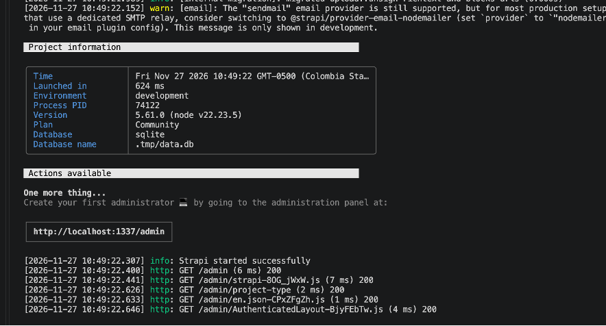
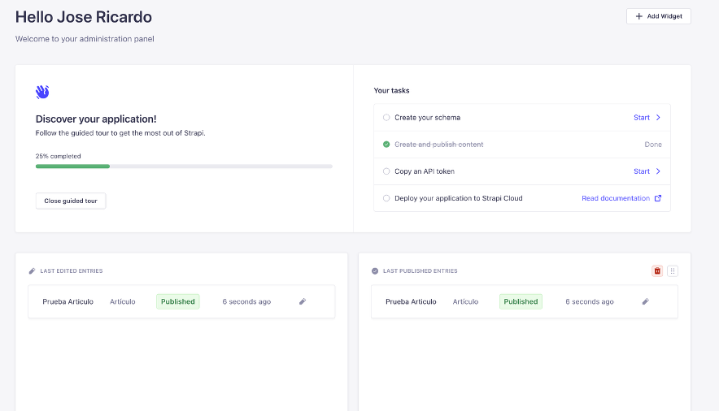
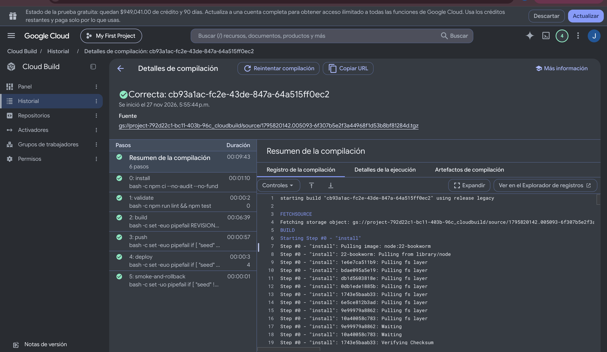
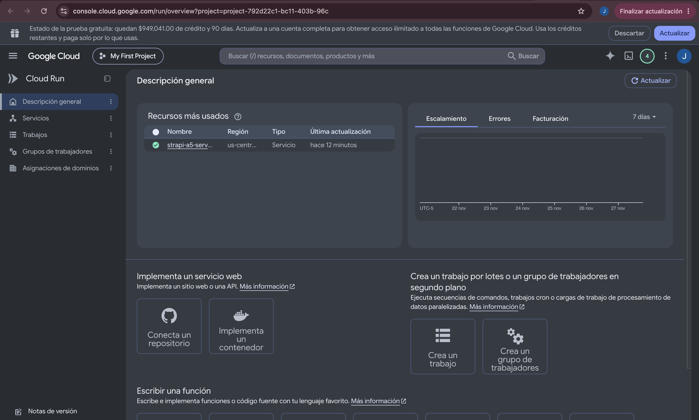
strapi-a5-service listo para atender HTTPS.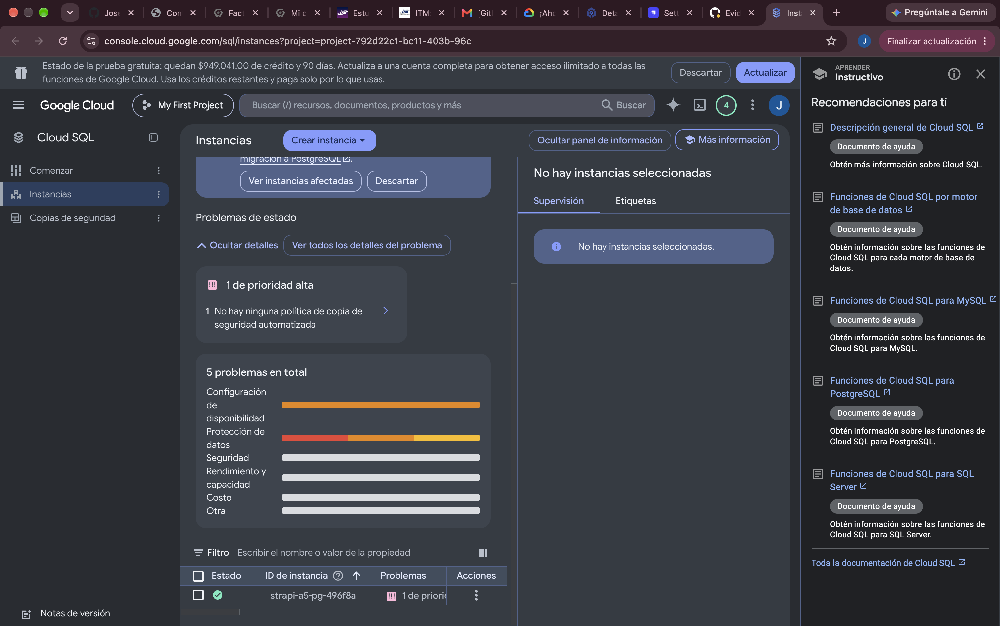
strapi-a5-pg-496f8a en ejecución.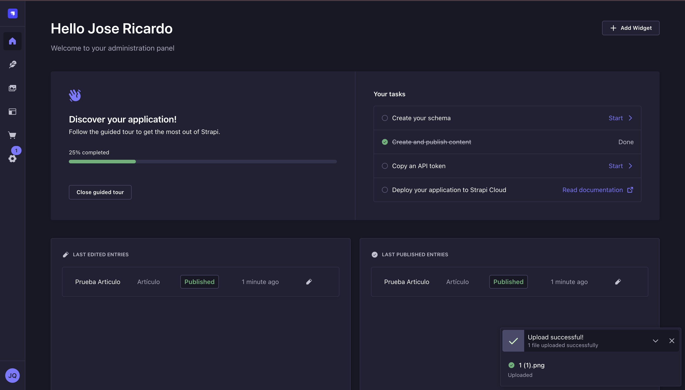
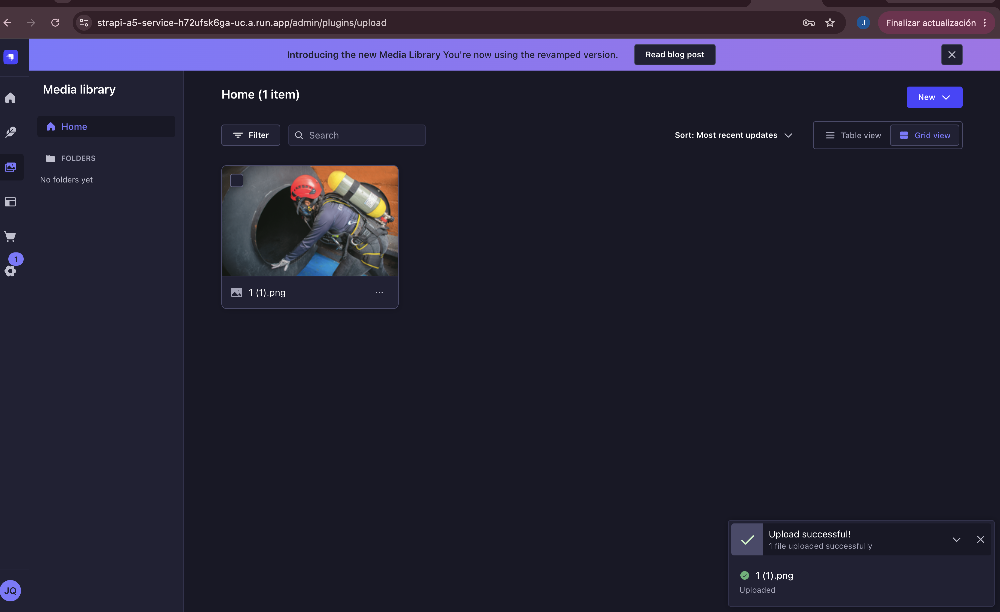
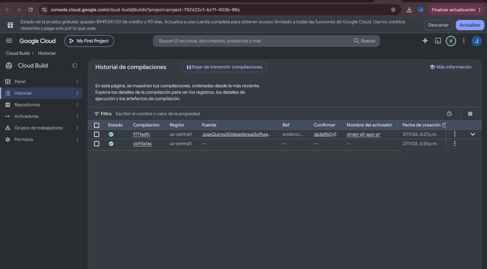
_DEPLOY=false ejecutó validación y build sin cambiar la revisión activa.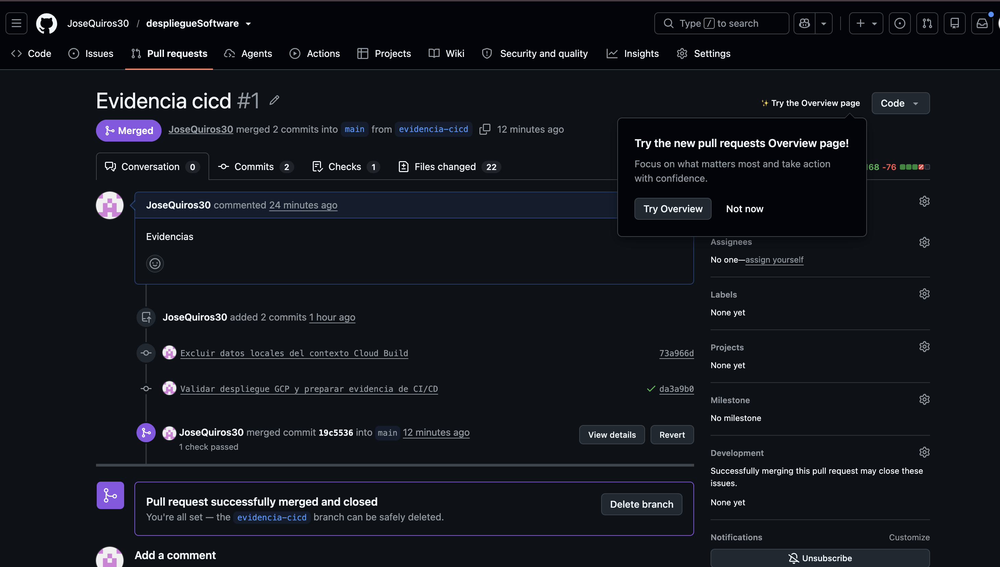
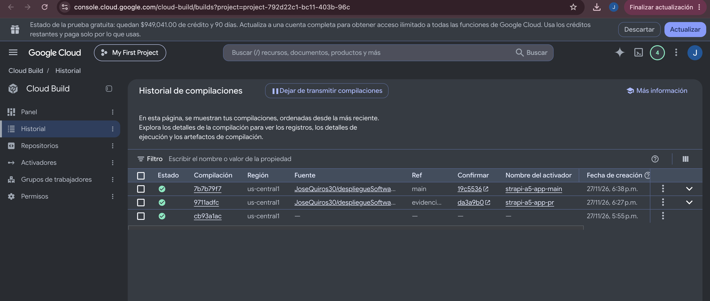
main exitoso. La nueva imagen se desplegó y el smoke test terminó correctamente.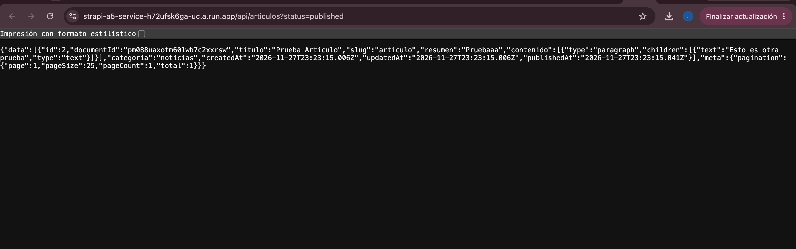
Revisiones verificadas con gcloud: strapi-a5-service-00002-rc6 True strapi-a5-service-00001-nnx True
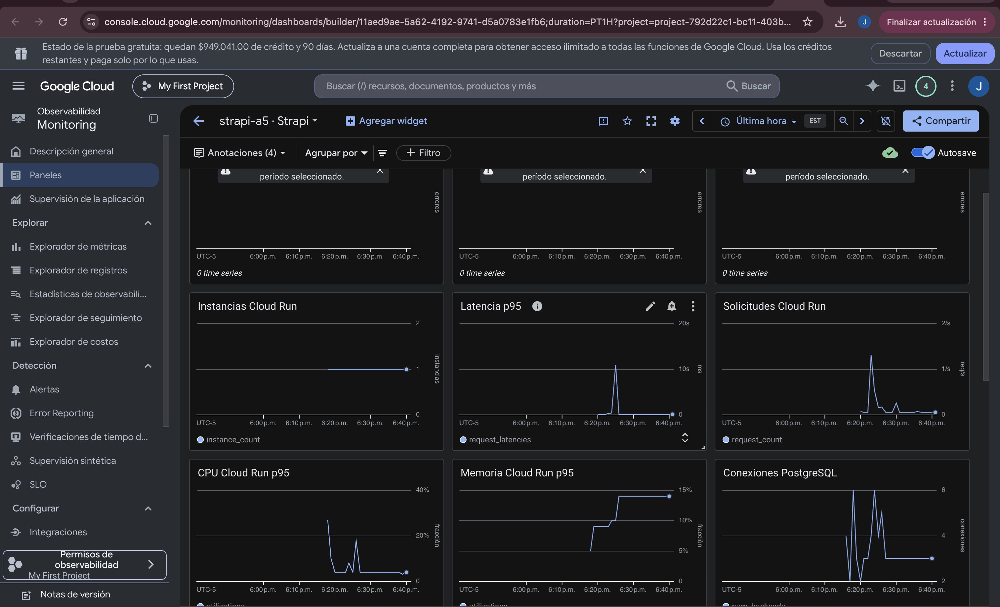
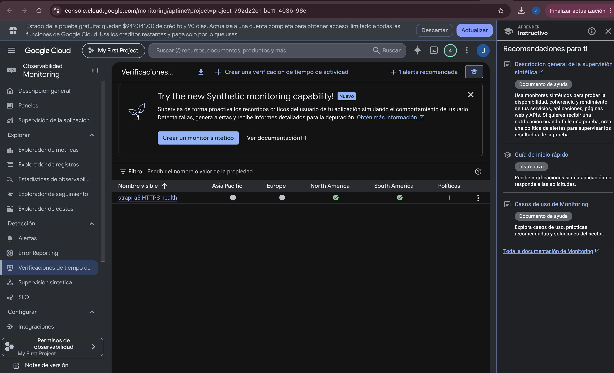
/api/health indicó disponibilidad.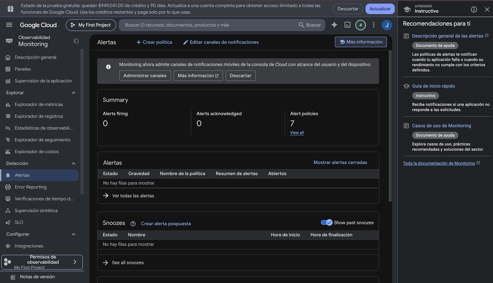
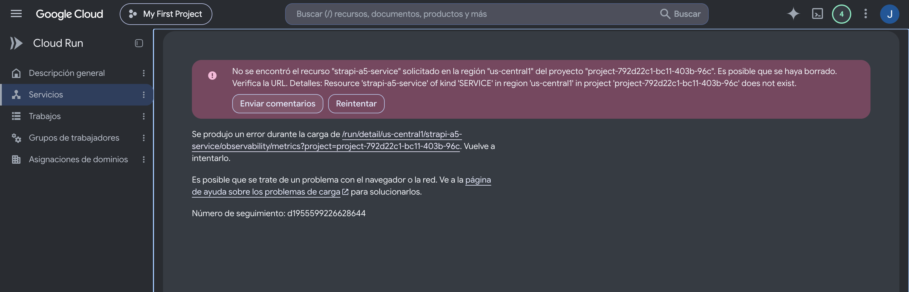
strapi-a5-service ya no existe. Las consultas CLI confirmaron además ausencia de Cloud SQL y de los demás recursos activos.La actividad cumplió la Opción A: infraestructura como código, aplicación contenerizada, base de datos relacional administrada, CI/CD de aplicación y observabilidad definida en Terraform. La ejecución real demostró el flujo completo de PR a main y la persistencia de contenido y medios entre revisiones.
| Verificación final | Resultado observado el 27 de noviembre de 2026 |
|---|---|
| Recursos de la práctica | Sin VM, Cloud SQL, Cloud Run, repositorios, buckets activos, secretos, triggers, IP o discos. |
| Estado Terraform | Vacío en infra/ y bootstrap/. |
| Facturación de este proyecto | billingEnabled: false; cuenta de facturación desvinculada. |
| Retención recuperable | Tres buckets borrados permanecen visibles como recuperables durante el plazo configurado. |
Límite de la auditoría: no se consultó un estado de cuenta monetario desde la CLI. Los cargos generados antes de desactivar facturación pueden aparecer después en los informes. Conviene revisar Facturación → Informes filtrando por este proyecto y las fechas de la práctica.
Documentos de soporte: validaciones GCP, auditoría de costos y capturas originales.
Fuentes: Google Cloud, documentación de facturación por proyecto y borrado recuperable; Strapi, configuración de base de datos.